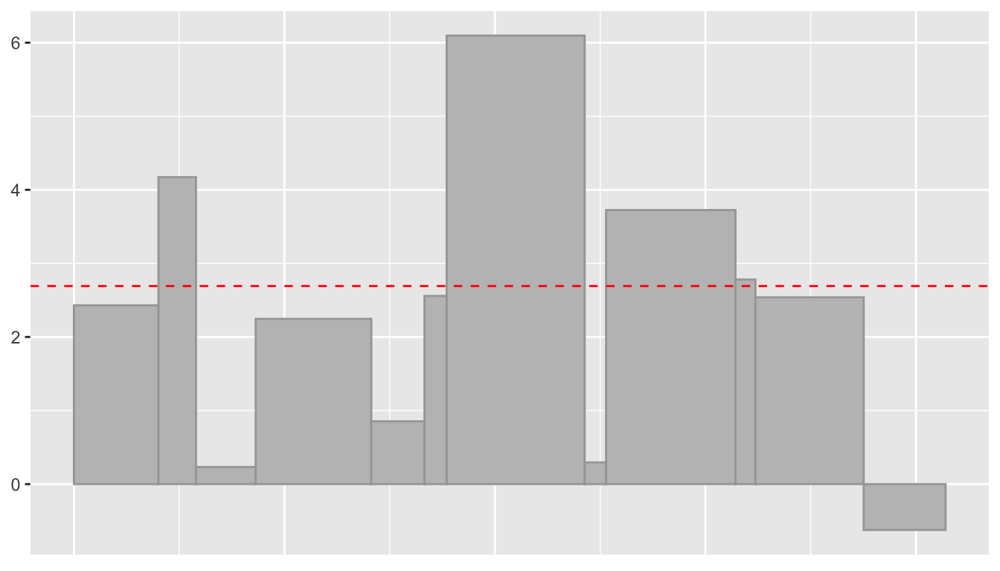
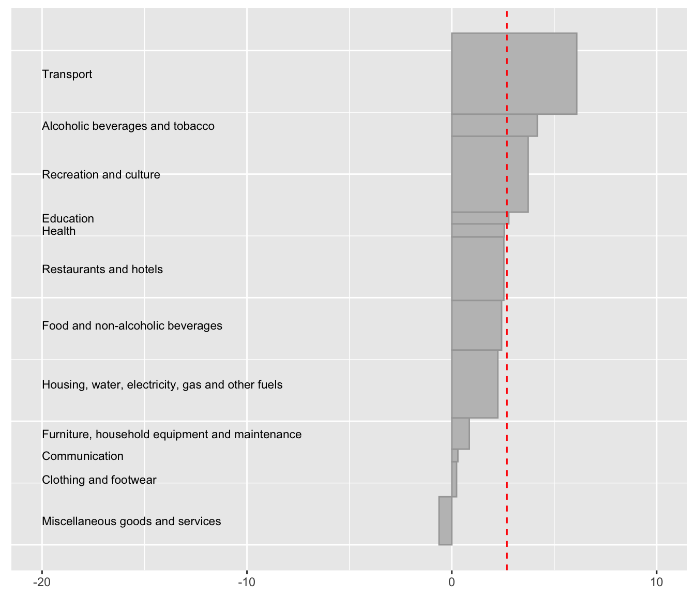
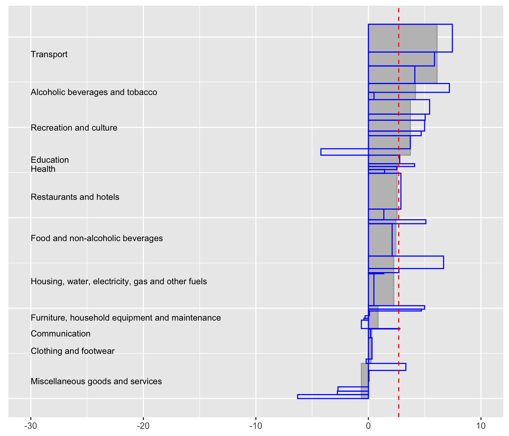

DrawingUpAndDownPlots.RmdWhen changes in cost-of-living indices are reported, so are major changes in the constituent items. Sometimes items with big percentage changes have small weight and do not affect the index as much as an item with a smaller change and a bigger weight. The same goes for stock market indices that include some very big firms as well as much smaller ones. Both percentage changes and absolute changes are needed for proper assessment. UpAndDown plots are designed to show both.
library(UpAndDownPlots)
library(tidyverse)
yy <- ud_prep(CPIuk, weight="Weight", v1="Aug2017", v2="Aug2018", levs=c("Sector"), sortLev=c("orig"))
y1 <- ud_plot(yy, labelvar="Sector")
y1$uad
Fig 1: An UpAndDown plot showing changes in the twelve sectors of the UK CPI (Consumer Price Index) between August 2017 and August 2018. The red dashed line shows the overall percentage change in the index over the year. The grey rectangles show the corresponding sector changes, where the height is percentage change and the width is the Sector’s contribution to the index in August 2017, so that the area displays the absolute change.
Sorting the sectors by percentage change and adding names is more informative and gives the next display, which has been rotated to make space for the labels.
yw <- ud_prep(CPIuk, weight="Weight", v1="Aug2017", v2="Aug2018", levs=c("Sector"), sortLev=c("perc"))
y2 <- ud_plot(yw, labelvar="Sector")
y2$uadl Fig 2: Changes in the UK CPI sorted by sectoral percentage changes. Transport is the largest sector and also where prices increased most. Prices in the sector Miscellaneous goods and services were the only ones that decreased.
Subsectors do not always behave as the sectors they belong to, so it is interesting to investigate subsectoral changes as well.
yz <- ud_prep(CPIuk, weight="Weight", v1="Aug2017", v2="Aug2018", levs=c("Sector", "Subsector"), sortLev=c("perc", "perc"))
y3 <- ud_plot(yz, labelvar="Sector")
y3$uadl Fig 3: The transparent blue rectangles for the subsectors have a similar structure to the grey ones for the sectors with the width being proportional to contribution, the height to the percentage change, and the area to the absolute change. One subsector in the sector Recreation and culture has a large decrease while all other subsectors there increased by more than the overall average. Percentage changes in Clothing and footwear subsectors differ little, while Furniture, household equipment and maintenance percentage changes differ a lot, as do those in Miscellaneous goods and services.